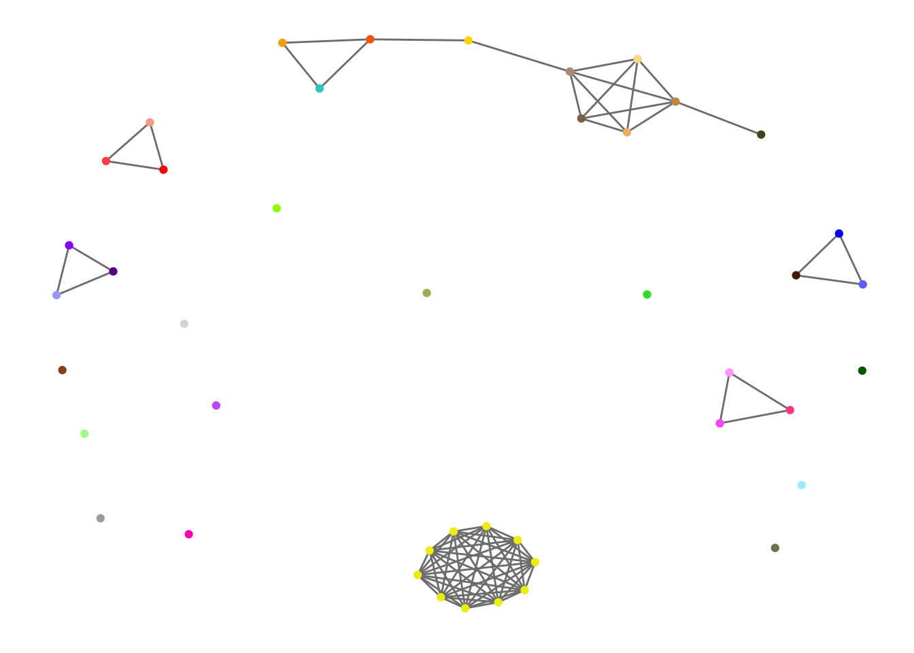

Last updated: 2017-03-28
Code version: f10ea45
[1] “Adipose_Subcutaneous”
[2] “Adipose_Visceral_Omentum”
[3] “Adrenal_Gland”
[4] “Artery_Aorta”
[5] “Artery_Coronary”
[6] “Artery_Tibial”
[7] “Brain_Anterior_cingulate_cortex_BA24” [8] “Brain_Caudate_basal_ganglia”
[9] “Brain_Cerebellar_Hemisphere”
[10] “Brain_Cerebellum”
[11] “Brain_Cortex”
[12] “Brain_Frontal_Cortex_BA9”
[13] “Brain_Hippocampus”
[14] “Brain_Hypothalamus”
[15] “Brain_Nucleus_accumbens_basal_ganglia” [16] “Brain_Putamen_basal_ganglia”
[17] “Breast_Mammary_Tissue”
[18] “Cells_EBV-transformed_lymphocytes”
[19] “Cells_Transformed_fibroblasts”
[20] “Colon_Sigmoid”
[21] “Colon_Transverse”
[22] “Esophagus_Gastroesophageal_Junction”
[23] “Esophagus_Mucosa”
[24] “Esophagus_Muscularis”
[25] “Heart_Atrial_Appendage”
[26] “Heart_Left_Ventricle”
[27] “Liver”
[28] “Lung”
[29] “Muscle_Skeletal”
[30] “Nerve_Tibial”
[31] “Ovary”
[32] “Pancreas”
[33] “Pituitary”
[34] “Prostate”
[35] “Skin_Not_Sun_Exposed_Suprapubic”
[36] “Skin_Sun_Exposed_Lower_leg”
[37] “Small_Intestine_Terminal_Ileum”
[38] “Spleen”
[39] “Stomach”
[40] “Testis”
[41] “Thyroid”
[42] “Uterus”
[43] “Vagina”
[44] “Whole_Blood”
library(sna)
library(ggplot2)
library(ggnetwork)
graph_01 = matrix(0, ncol = 44, nrow = 44)
index_crt =list()
index_crt[[1]] = c(7:16)
index_crt[[2]] = c(23,35,36)
index_crt[[3]] = c(25,26,29)
index_crt[[4]] = c(1,30)
index_crt[[5]] = c(20,21,22,24,39)
index_crt[[6]] = c(25,26)
index_crt[[7]] = c(4,5,6)
index_crt[[8]] = c(24,30)
index_crt[[9]] = c(1,2,17)
index_crt[[10]] = c(31,42,43)
index_crt[[11]] = c(21,37)
for(k in 1:11){
for(i in index_crt[[k]]){
for(j in index_crt[[k]]){
if(i<j) graph_01[i,j] = 1
}
}
}
dat = read.table('../data/GTExColors.txt', sep = '\t', comment.char = '')
colordata = dat[c(1:6,9:18,21:23,26:30,32,33,35,36,38:53),1:2]
n <- network(graph_01, directed = FALSE)
n %v% "tissue" <- as.character(colordata[,1])
n %v% "importance" <- sample(1:3, 11, replace = TRUE)
e <- network.edgecount(n)
set.edge.attribute(n, "type", sample(letters[24:26], e, replace = TRUE))
set.edge.attribute(n, "day", sample(1:3, e, replace = TRUE))
ggplot(n, aes(x = x, y = y, xend = xend, yend = yend)) +
geom_edges( color = "grey50") +
geom_nodes(color = as.character(colordata[,2])) +
theme_blank()
sessionInfo()R version 3.3.0 (2016-05-03)
Platform: x86_64-apple-darwin13.4.0 (64-bit)
Running under: OS X 10.12.3 (unknown)
locale:
[1] en_US.UTF-8/en_US.UTF-8/en_US.UTF-8/C/en_US.UTF-8/en_US.UTF-8
attached base packages:
[1] stats graphics grDevices utils datasets methods base
other attached packages:
[1] workflowr_0.4.0 rmarkdown_1.3 ggnetwork_0.5.1
[4] ggplot2_2.2.1 sna_2.4 network_1.13.0
[7] statnet.common_3.3.0
loaded via a namespace (and not attached):
[1] Rcpp_0.12.9 knitr_1.15.1 magrittr_1.5 munsell_0.4.3
[5] colorspace_1.3-2 stringr_1.2.0 plyr_1.8.4 tools_3.3.0
[9] grid_3.3.0 gtable_0.2.0 git2r_0.18.0 htmltools_0.3.5
[13] yaml_2.1.14 lazyeval_0.2.0 assertthat_0.1 digest_0.6.12
[17] rprojroot_1.2 tibble_1.2 ggrepel_0.6.5 evaluate_0.10
[21] labeling_0.3 stringi_1.1.2 scales_0.4.1 backports_1.0.5 This R Markdown site was created with workflowr